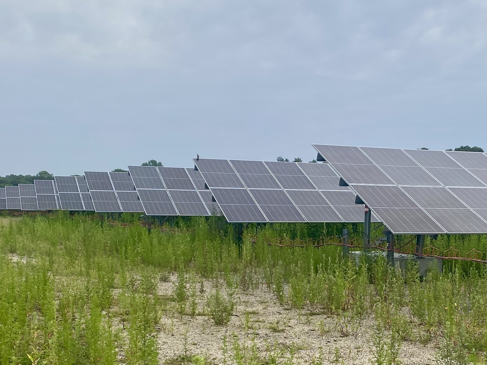

Minghao QIU
Assistant Professor, Stony Brook University
Publication: One Earth
Date: October 8, 2025
Links: Published paper; Preprint pdf; Supplemental Information pdf; Source Code and Data
Imported Solar Panels Deliver Major Climate and Health Benefits to the U.S., New Study Finds
As policymakers debate the future of clean energy supply chains, a new study published in One Earth reveals that imported solar panels have already delivered billions of dollars in public health and climate benefits to the United States.
The study, led by researchers from City University of New York (CUNY) and Stony Brook University, finds that solar panels imported into the U.S. between 2014 and 2022 displaced significant fossil fuel generation, avoided 178 million tons of carbon dioxide emissions, and prevented an estimated 595 premature deaths linked to air pollution. These avoided impacts translate to $28 billion in monetized benefits—highlighting the far-reaching societal value of global clean energy trade.
“Global supply chains have helped make solar power affordable,” said Dr. Gang He, project lead and associate professor at CUNY Baruch College and the Graduate Center. “But what’s often missed is how these imports also clean the air, protect health, and reduce climate damages. These are benefits that extend well beyond electricity prices.”
The researchers analyzed detailed shipment and power plant data across the U.S., using a reduced-complexity air quality model to track how solar energy displaced fossil fuels and improved air quality in different regions. They found that roughly 70% of solar electricity generated in recent years came from imported photovoltaic (PV) modules—mostly from countries such as Vietnam, Malaysia, and Thailand.
Key findings include: During the study period between 2014 and 2022
Notably, the benefits were not confined to solar-importing states. “Over 40% of the air quality benefits flowed to people living outside the states that imported the panels,” said lead author Dr. Minghao Qiu, an assistant professor in the School of Marine and Atmospheric Sciences and the Program in Public Health at Stony Brook University. “That’s due to how electricity and air pollution move across state lines.”

The study also found that some regions benefited disproportionately. “The Carolinas, Texas, and parts of California saw especially high health and climate benefits because imported solar displaced power plants with high pollution burdens in densely populated areas,” said coauthor Dr. Peter Marcotullio, professor of geography at CUNY Hunter College and the Graduate Center. “This has real implications for regional planning and environmental justice—showing where clean energy investments can yield the greatest returns for human well-being.”
The study comes at a time when governments are reevaluating their reliance on foreign-made solar technology, citing concerns about energy security, geopolitics, and domestic job creation. The authors caution that shifting away from global supply chains without accounting for these broader societal benefits could slow clean energy deployment—and diminish its health and environmental gains.
“Our research shows that imported solar panels do more than save money,” said He. “They save lives and reduce emissions. As we redesign energy and trade policies, we need to make sure we’re not leaving these benefits off the table.”
The study was supported by the Global Energy Initiative at ClimateWorks Foundation. The full study is available in One Earth: https://www.cell.com/one-earth/abstract/S2590-3322(25)00293-3
Citation
Qiu, Minghao, Gang He, and Peter Marcotullio. 2025. “Imported solar photovoltaic contributed to health and climate benefits in the United States” One Earth, 8: 101467. https://doi.org/10.1016/j.oneear.2025.101467.
Learn more about the research.